Bag & Checkout Redesign
I led the complete redesign of Sally Beauty's shopping bag and checkout experience, transforming an outdated, multi-page checkout process into a streamlined, conversion-optimized journey. This project addressed critical business pain points that confused customers and led to order cancellations.
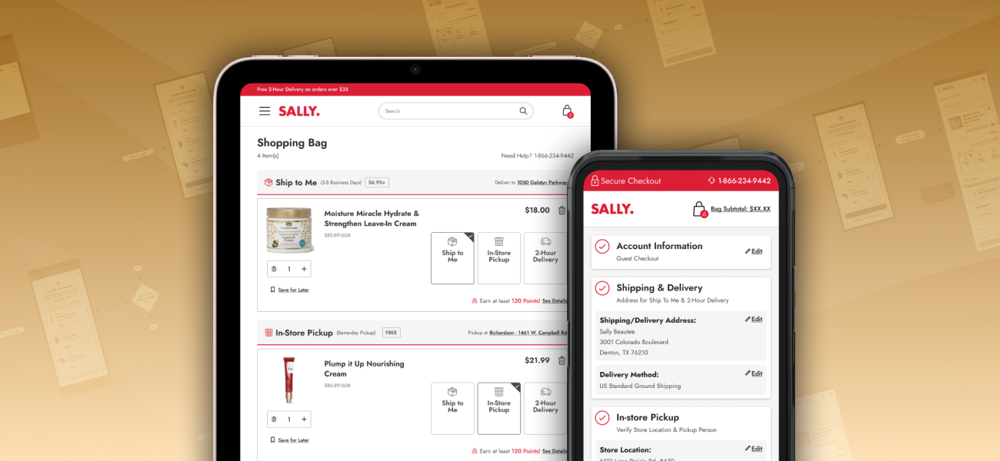PROJECT INFO
- Company: Sally Beauty Holdings, Inc.
- Project Length: 6 months
- Platform: Website (desktop and mobile)
MY ROLE
- UX/UI Designer
- UX Researcher
- User Test Facilitator
CROSS-FUNCTIONAL COLLABORATION
- Back-end Development
- Customer Service
- Ecommerce
- Analytics
- Logistics
METHODS & TOOLS
- Figma
- UserTesting.com
- Heuristic Evaluation
- User Flows
- Visual/UI Design
- Accessibility Standards
- User Testing & Evaluation
At a Glance
I led the complete redesign of Sally Beauty's shopping bag and checkout experience, transforming an outdated, multi-page checkout process into a streamlined, conversion-optimized journey. This project addressed critical business pain points including high checkout abandonment and complex fulfillment options that confused customers and led to order cancellations.
The result? The bag and checkout redesign fundamentally transformed Sally Beauty's e-commerce conversion funnel, resulting in a $2.5M increase in annual online sales, reduced checkout abandonment, and decreased order cancellations through improved fulfillment communication.
JUMP TO A SECTION:
Challenges | Research & Discovery | The Bag Redesign | The Checkout Redesign | Results & Impact
Challenges
Understanding The Problem
Sally Beauty leadership, being aware of website revenue loss due to bag and checkout problems that had gone unaddressed for years, tasked the UX team with optimizing the full end-to-end experience. Solving these specific business problems were top priorities for the project:
40% of customers who started checkout never completed their purchase.
That many users abandoning their progress so close to the end of the purchasing journey suggested a major point of frustration that needed to be addressed.
Post-purchase cancellations represented a potential $1M annual loss.
The high rate of purchase cancellations was not only impacting revenue that should have been captured, but was causing avoidable headaches for customers.
Buy online/pickup in-store (BOPIS) had only 20% penetration.
Despite in-store pickup being a highly profitable fulfillment option across the board, Sally Beauty customers were not utilizing it nearly as much as expected.
40% of calls were customers trying to change fulfillment types after ordering.
A significant portion of customers realized they had chosen the wrong delivery method after ordering, indicating that the checkout process was contributing to user error.
The UX Challenge: Meeting Business Goals
Overall, the redesign needed to measure up to digital industry benchmarks for checkout conversion. Enhancement of the bag and checkout experience aimed to meet or exceed these performance indicators:
Stop Revenue Loss
Addressing the issues causing checkout abandonment should ideally result in a 3-4% incremental revenue increase.
Boost In-Store Pickup Orders
A potential 30-35% increase in BOPIS penetration could be achieved by eliminating the confusion around fulfillment options.
Reduce Cancellations
As much of a reduction as possible in the rate of order cancellations and post-purchase customer service calls would be a win.
Optimize for Mobile
Maintain parity between the mobile and desktop checkout experiences while being mobile-first, given Sally's traffic patterns.
Research & Discovery
Heuristic Evaluation & Competitive Analysis
I conducted an audit of the current bag and checkout experience, comparing it against industry best practices. I also leveraged existing UX research on website customer personas to inform design decisions. This research highlighted specific pain points and gaps in user understanding and expectations around placing an order.
Customer personas informed design decisions throughout the bag and checkout redesign process.
Problems in the Checkout Experience
After analyzing the collected data, the following problems emerged as top priorities to be addressed in checkout journey:
An Outdated Multi-Page Process
We needed to update to a more modern and streamlined checkout UI - keeping as much of the experience as possible on the same page reduces abandonment by being faster, having fewer steps, and being easier to follow through
Unclear Communication on Critical Steps
Some users overlooked the difference between a billing vs. shipping address, entering the wrong information and never getting their order
Difficult to Backtrack and Correct Mistakes
Users couldn't edit saved payment information, forcing them to delete and re-enter everything when they made a mistake
Interruptions to the User's Journey
Account registration and other links on the checkout UI took users completely out of the checkout flow with no warning, breaking the user's focus
Mobile Dysfunction
The interface was not at all optimized for smartphones (Sally's primary traffic source)
Missing Trust Signals
The overall outdated appearance and lack of security indicators looked unprofessional for a major retail brand, which risked making users hesitant to enter their personal information and decide to shop elsewhere
Problems in the Shopping Bag Experience
Likewise, the data I aggregated pointed to the most urgent user pain points and design patterns that needed to be addressed in the bag:
Fulfillment Confusion
Users didn't always understand that each individual bag item needed one of three available fulfillment methods specified (shipping, same-day delivery, in-store pickup) or they could not proceed to checkout; this added extra unexpected steps and an increased cognitive load
Mixed Basket Complexity
Multiple fulfillment types in a single order increased the likelihood of mistakes (wrong delivery address, lost packages, gate code issues) and topped the list of complaints to customer service
Lost Opportunity for Upselling
Running promotions were never shown on eligible items in the cart unless the requirements were already met, meaning most customers only discovered them by accident
Inconsistent Error Messaging
Important alerts would appear in unexpected places with inconsistent styling
Inventory Gaps
Same-day delivery and BOPIS had real-time inventory issues causing unexpected cancellations; items would go out of stock during checkout and cause customers to lose their order (10% of abandoned carts)
Hidden "Place Order" Button
Desktop users would get as far as the order review screen but scroll past the CTA and forget it was there, leaving the page without realizing their order was not yet placed
With research and determining requirements completed, I was ready to start designing. Given the scope and complexity the work was organized into Agile sprints, tackling the bag first followed by checkout.
The Bag Redesign
Overall Bag Page Refinements
I standardized spacing for better readability, decluttered the page header and order summary, and made small improvements to the design and functionality of the "save for later" product cards. Everything was updated to align with our design system.
Before and after comparison of the bag page refinements showcasing the new fulfillment headers and improved product card design.
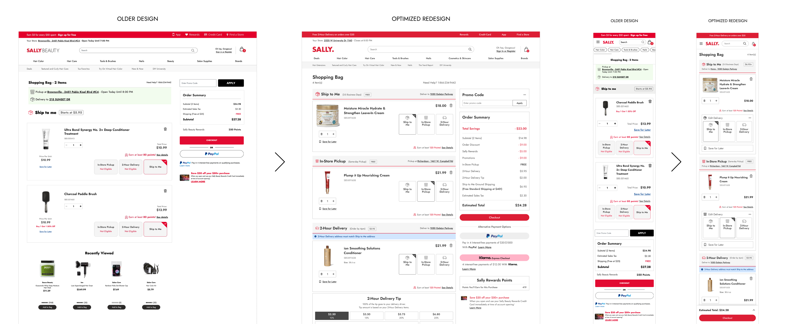Fulfillment Headers: Solving the Mixed Basket Problem
The biggest innovation was creating "fulfillment headers" that visually separated items into distinct sections by fulfillment type. The major pain point contributing to order cancellation mistakes was largely solved by implementing these key improvements:
- Visual organization: Items are now grouped into "mini-bags" separated by fulfillment method
- Sticky behavior: Headers remain visible while scrolling (especially helpful on mobile)
- Better context: Clear messaging about what each fulfillment type means
- Centralized editing: Users modify addresses through the fulfillment headers, applying changes to all items in that fulfillment category
- Logical proximity: Same-day delivery tipping was placed under the delivery header instead of right above the main checkout CTA
The fulfillment headers were redesigned to consolidate fulfillment type selection into a single step.
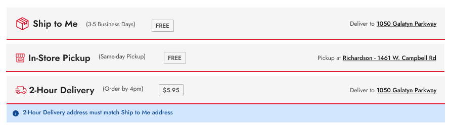Product Card Improvements
Product cards received comprehensive updates:
- Improved readability: Better typography and spacing made cards easy to scan at a glance
- Simplified fulfillment tiles: Removed redundant address editing now handled by headers
- Mobile optimization: Non-essential elements were made collapsible on mobile product cards to reduce scroll length
- Optimized design for all product variants: Standard items, product sets, protection plans, color/size/scent options, sale pricing, and bonus gifts were all accounted for
Before and after comparison of the product card improvements showcasing the improved readability, simplified fulfillment tiles, and mobile optimization.
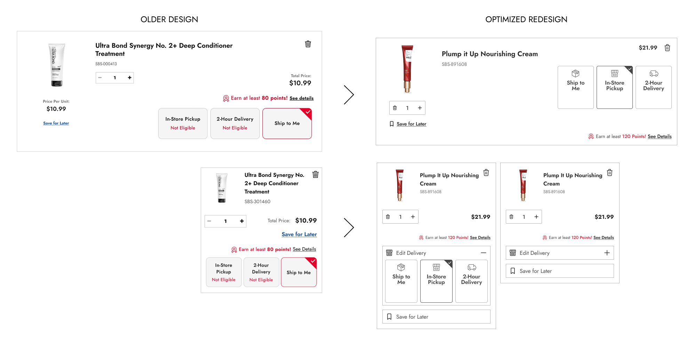Error Messaging Overhaul
I conducted a complete audit of all possible error scenarios and outlined the logic for each. Messaging now provided clear, actionable guidance and displayed consistent styling with logical proximity to the affected item or section.
Error messaging overhaul with standardized formatting, clear communication, and logical proximity to the affected item or section.
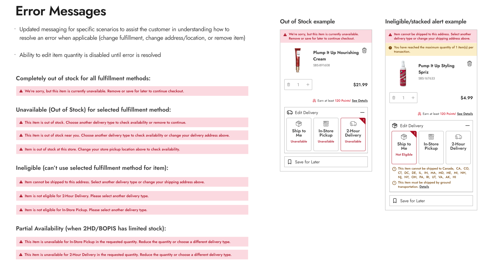Fulfillment tile error state formatting. Simplifying meant we could sunset some existing functionality to improve the user experience.
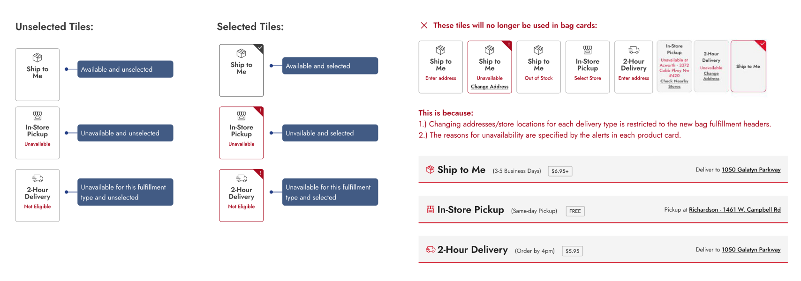Promotional Badges: Making Deals Discoverable
One of the most impactful changes was making promotions visible in the bag, easy to understand, and actionable.
Core Functionality:
- Promo badges appear on eligible products as soon as promotions are running (not just after requirements are met)
- Clickable details: Badges link to popup with full promotion information
- Strike-through pricing: Shows exact savings on discounted items
- Multi-promo handling: Products eligible for multiple promotions consolidate all under a single badge
- Confirmation messaging: Clear alerts when promotions are successfully applied
Promotional badge on eligible products. Example of single and multiple promotions along with the popup that appears when the badge is clicked.
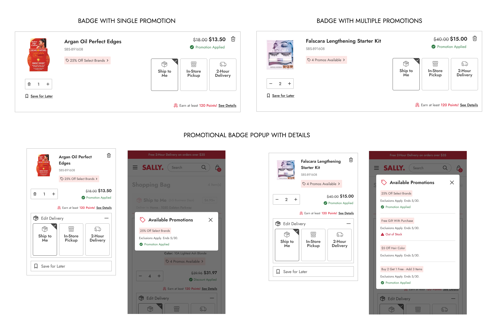Complex Use Cases:
- Buy 2 Get 1 Free: Clear "add 3 to bag" verbiage prevents confusion
- Free gift with purchase amount: Banner on shipping header with popup to add items without leaving bag
- Free gift with specific product: Badge on product card with automatic opt-in/opt-out functionality
- Multiple gift choices: Modal for browsing and selecting from available options
- Fulfillment restrictions: Alerts when free gifts can't ship with certain fulfillment methods
Free gift with purchase promotions integrated into product cards with clear opt-in/opt-out functionality.
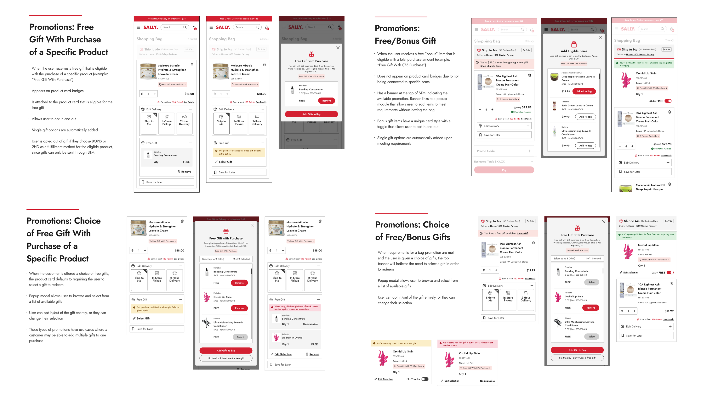The Checkout Redesign
Optimized One-Page Checkout
With the bag redesign complete, it was time to tackle checkout and connect the two experiences as parts of a larger journey. I designed multiple one-page checkout templates adhering to modern best practices, then refined the approach based on stakeholder feedback. The final design featured these core improvements:
- Numbered steps: Clear progress indication showing completed and upcoming steps
- Visible information: Previously entered data always visible for easy review
- Easy editing: Users can backtrack to any step without losing information
- Streamlined header: Redesigned to minimize distractions
- Exit intent protection: Popups confirm before leaving checkout to prevent accidental exits
- Maximum 6 steps: Fewer based on fulfillment types in order
Step 1: Account Information
Guest checkout, login, and new account creation are all accessible from the same step. I integrated the three main user journeys into the checkout flow itself:
- Guest checkout: Proceed immediately without account
- Login: Existing users sign in seamlessly
- New account creation: Complete signup without leaving checkout, including rewards program enrollment
Key Features:
- Guest users can change their mind mid-checkout and either log in or create an account without losing their progress
- Information entered before account decision is preserved
- New accounts at checkout automatically apply welcome coupon to current order
Screens for the checkout entry step and how account creation is integrated into the flow.
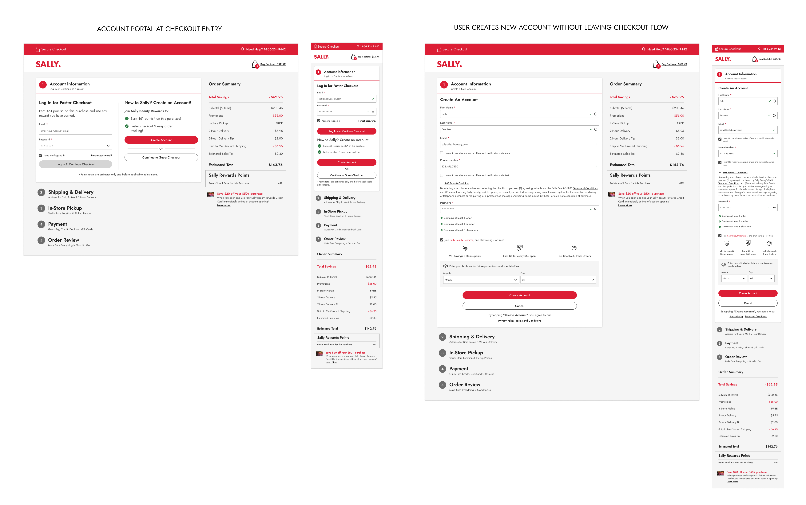Step 2: Shipping & Same-Day Delivery
I consolidated address entry for mixed bags requiring both fulfillment types:
- Dynamic headers: Reflect whether user has shipping, delivery, or both
- Optimized forms: Optional fields (apartment, PO box, delivery instructions) collapsed by default
- Saved addresses: Existing users can select from saved addresses or add new ones
- Mobile-optimized: Streamlined for smartphone completion
Before & after comparison of the guest address entry form. Dynamic headers reflect whether user has shipping, delivery, or both. Note the expandable optional form fields
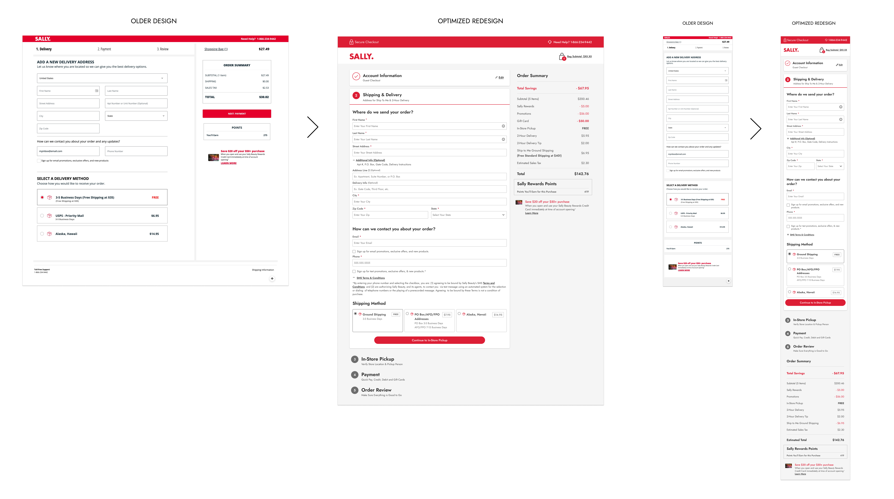Logged-in user checkout address screen with saved addresses and new address entry.
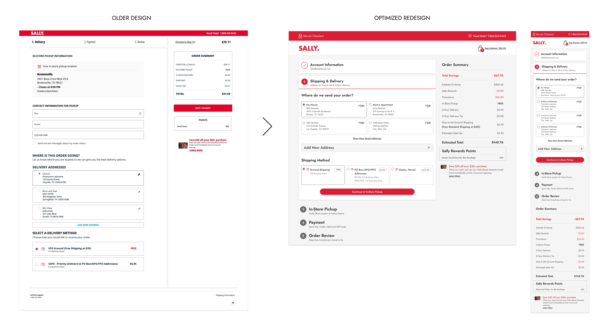Step 3: BOPIS (Buy Online, Pickup In-Store)
I separated BOPIS into its own step for better clarity. In the previous version it was on the same page as the shipping & same-day delivery step, which was causing visual confusion and adding unnecessary work for users who were filling out form fields with repetitive information.
- Store location: Address and hours for the selected store, which was determined in the bag.
- Pickup person information: Name and contact details for store coordination. The name and email are pre-filled from either the account information step or the shipping & delivery step.
- Availability check: Alerts users that changing store location requires returning to bag to determine if a different store has the items in stock.
BOPIS checkout step with store selection and pickup details.
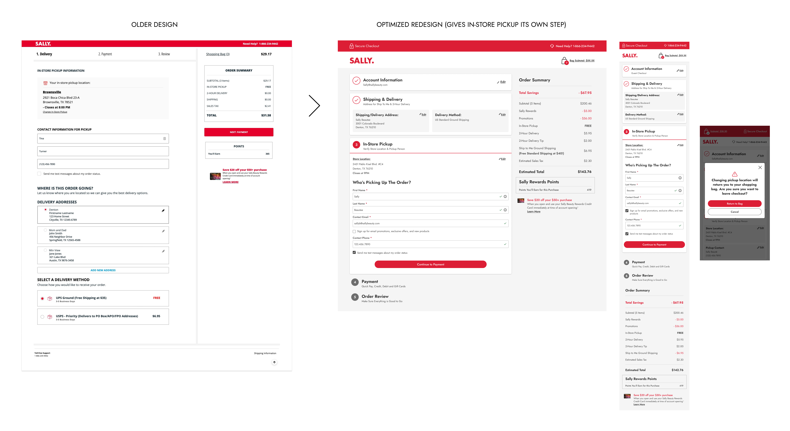Step 4: Payment Options
Secure payment entry with saved payment methods, clear security indicators, and the ability to edit saved cards without deletion.
I optimized payment forms for all scenarios:
- Multiple payment types: Credit/debit cards, gift cards, third-party processors (Klarna, PayPal)
- Complex gift card logic: Partial payments with backup card requirements
- Saved payment management: Existing users select from saved cards or add new ones
- 10-card maximum: UX team decision to prevent cluttered, unusable saved card lists
Payment step with saved payment methods and clear security indicators.
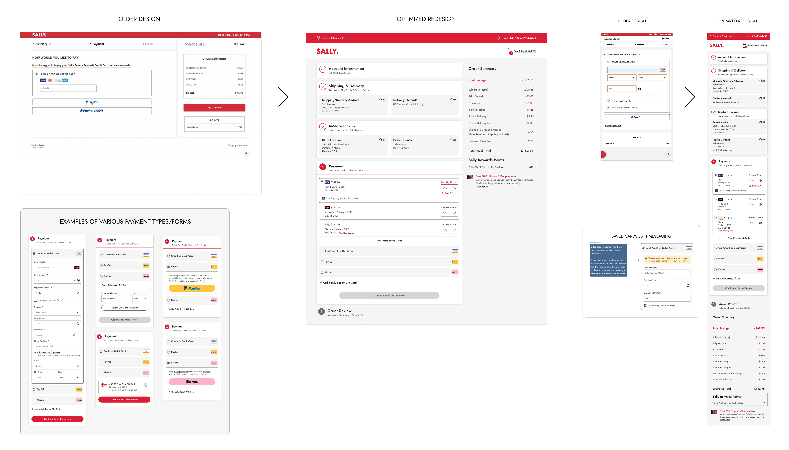Step 5: Order Review
Users are now able to:
- See all entered information: Complete order summary is easily scannable
- Edit from this screen: Direct links to modify any section (address, payment, etc.)
- See the final price: Tax and total is calculated at this step
- Find the CTA button: Clear layout and a sticky "Place Order" button that's always visible on both mobile and desktop to reduce accidental abandonment
Order review step with comprehensive order details and prominent placement of the Place Order button.
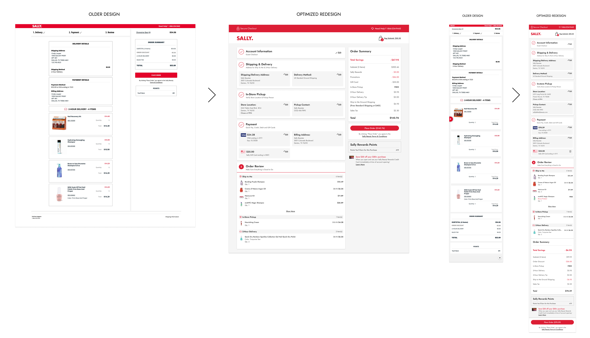Step 6: Order Confirmation
Finally, I created a success state that:
- Confirms order placement: Clear visual indication purchase is complete
- Offers tracking signup: When applicable for fulfillment type
- Enables account creation: Guest users can quickly sign up with pre-filled information
Order confirmation page with clear visual indication purchase is complete and offers tracking signup when applicable for fulfillment type.
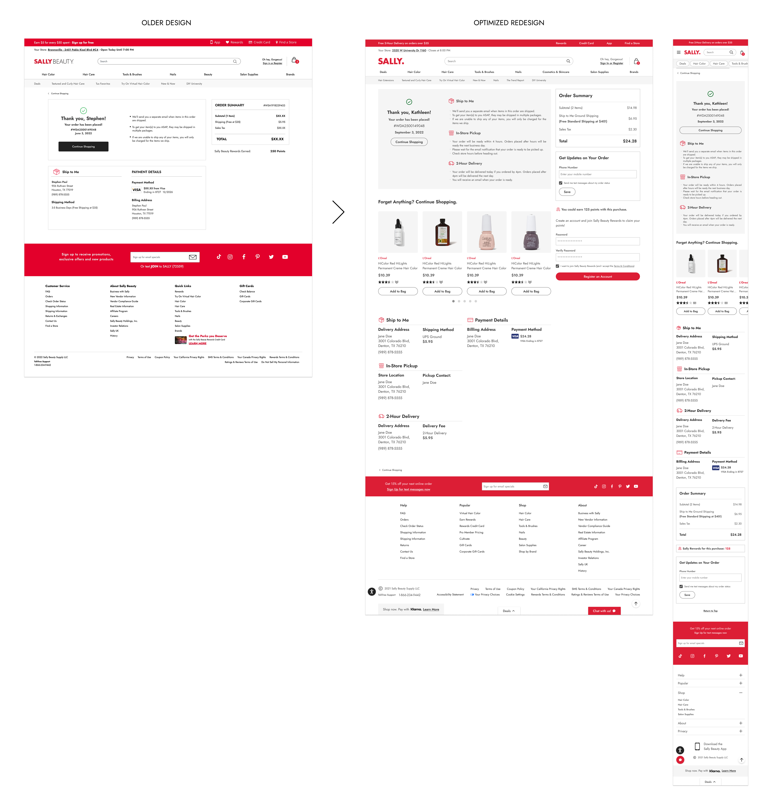User Testing & Validation
I built interactive prototypes and conducted 5 unmoderated user tests to validate critical design decisions:
Test 1: Logged-In Checkout Experience
"I liked that it didn't let me move forward if something wasn't correct and then at the very end it had me just check over everything before placing the order. I felt confident that I was making the right purchase."
- Test 1 User Feedback
Goal: Evaluate the one-page checkout for users with existing accounts, particularly saved address and payment card functionality.
Key Findings:
- Users found the experience easy to use and straightforward
- The numbered step system successfully communicated progress and allowed easy navigation
- "Add new address" functionality and truncated address lists performed well
- Shipping method selection was easily found even when pushed down the page
Issue Identified: None
Changes Made: Proceeded with the design as-is, no changes were made.
Test 2: New Account Creation at Checkout
"What was particularly helpful was that I could create the account without leaving the checkout process."
- Test 2 User Feedback
Goal: Evaluate how well users understand account options and the integrated account creation flow.
Key Findings:
- Users clearly understood differences between guest checkout, login, and account creation
- Integration of account creation within checkout was highly valued
- Rewards program information and points preview encouraged signup
- Overall one-page checkout approach received overwhelmingly positive feedback
Issue Identified: One user expected cancel button at bottom of create account page, not just the link at top.
Changes Made: Added cancel button at bottom of page, with plan to A/B test single vs. dual cancel options post-launch.
Test 3: Promotional Badges
"I do love that the promotions are in the cart, and the language is all great when you click on them. Very easy to understand and well designed."
- Test 3 User Feedback
Goal: Determine how users understand and interact with new promotional badges on product cards.
Key Findings:
- Badges met user expectations and were immediately understood
- Users quickly discovered badges were clickable for more details
- Having promotion information accessible in the bag was highly valued
- "Add 3 to bag" messaging successfully prevented B2G1 confusion
- Users understood when promotions were applied vs. not yet qualified
Issue Identified: Users with multiple stacked promotions may not realize some aren't yet applied if they don't click the badge. Some users expected to shop for more items directly from the bag to qualify for promotions.
Changes Made: Updated language on applied promotions to specify "1 of 2 Promotions Applied" for clarity. Noted in-bag shopability for future enhancement consideration (not launch-critical).
Test 4: Desktop "Place Order" CTA Placement
"That's exactly where you would expect the place order to be, right below your order total."
- Test 4 User Feedback
"It immediately told me, this is a review page. This is where we place our order."
- Test 4 User Feedback
"I think it's a great idea to have [the Place Order CTA] in two places. That way you can't miss it."
- Test 4 User Feedback
Goal: Solve the critical issue of users missing the Place Order button on desktop, causing them to leave without completing purchases.
Three Options Tested:
- Option 1: CTA at bottom of page (must scroll to see)
- Option 2: CTA in sticky right column under order summary (always visible)
- Option 3: Combination approach with sticky summary but CTA at bottom
Key Findings:
- 4 out of 5 users preferred Option 2 (sticky CTA in right column)
- Users found CTA placement near order total logical and expected
- Seeing CTA above the fold created more positive impression
- One user suggested having CTA in both locations to prevent missing it
- No users preferred Option 3 (sticky summary without sticky CTA)
Additional Insight: Testing with older users (43-61) revealed the one-page design successfully reduced cognitive load—all participants correctly identified fulfillment methods and understood the review process without confusion.
Changes Made: Implemented sticky right column with CTA always visible (Option 2). Planned A/B test post-launch to measure sticky-only vs. dual-placement performance.
Test 5: Shopping Bag Fulfillment Experience
"Delivery types here are easier than some stores I've shopped at."
- Test 5 User Feedback
"The edit delivery button was very easy to understand. No confusion whatsoever."
- Test 5 User Feedback
Goal: Validate the fulfillment header approach and overall bag redesign.
Key Findings:
- All users successfully completed tasks with minimal confusion
- Task design required deliberate thinking about fulfillment method selection, demonstrating users understood the headers' purpose
- Users quickly understood how to handle out-of-stock BOPIS items by changing store location
- Fulfillment type organization made sense and helped users understand their delivery options
Issue Identified: One user initially expected change address functionality to be within fulfillment tiles rather than headers (though quickly adapted).
Notable Insight: Users didn't automatically assume address in headers was clickable, suggesting less tech-savvy users might miss this initially. However, this didn't prevent task completion.
Changes Made: Improved error messaging to be more instructive, directing users explicitly to header for address changes when items are out of stock.
Results & Impact
Measurable Success Indicators
Meeting or Exceeding all Business Goals
According to Sally Beauty's UX Director, the bag and checkout redesign resulted in:
- $2.5M increase in online sales in the fiscal year following launch
- Reduced checkout abandonment contributing to 3-4% incremental revenue
- Decreased order cancellations through clearer fulfillment communication
- Improved BOPIS adoption through better visibility and ease of use
- Reduced customer service calls by preventing order mistakes
User Experience Improvements
- Streamlined purchasing journey: Multi-page checkout reduced to clear, one-page experience
- Increased trust and confidence: Modern interface with clear progress indicators
- Mobile-optimized experience: Primary traffic source finally had appropriate interface
- Promotional discovery: Customers could now find and redeem deals easily
- Error prevention: Clear messaging reduced confusion and prevented mistakes
Design System Enhancement
- Updated UI library: All new components added as flexible, reusable assets
- Better documentation: Detailed flows and specifications for development
- Cross-platform consistency: Maintained parity between mobile and desktop
- Scalable foundation: Components designed to accommodate future promotions
Long-Term Impact
The bag and checkout redesign fundamentally transformed Sally Beauty's e-commerce conversion funnel:
Sustained Revenue Growth
The $2.5M annual sales increase demonstrated that addressing user experience pain points directly impacts business performance. By reducing friction and building trust, we turned abandoning users into completing customers.
Foundation for Future Features
The modular component design and comprehensive error state coverage created a scalable system. New fulfillment types, promotional structures, or payment methods could be integrated without redesigning the entire experience.
Cross-Team Collaboration Model
Successfully coordinating with multiple teams established a framework for future complex initiatives. The sprint-based approach and detailed documentation became templates for other projects.
User-Centered Advocacy
Using data and user testing to push back on business requirements that would have harmed user experience demonstrated UX's strategic value. The integrated account creation solution satisfied both business goals and user needs, proving these aren't always in conflict.
The bag and checkout redesign met all its goals with measurable success. This project showcased how thoughtful, research-backed UX design directly contributes to business success while simultaneously improving customer satisfaction.